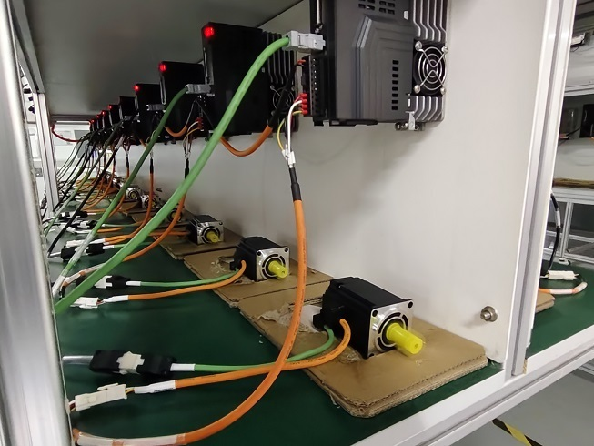
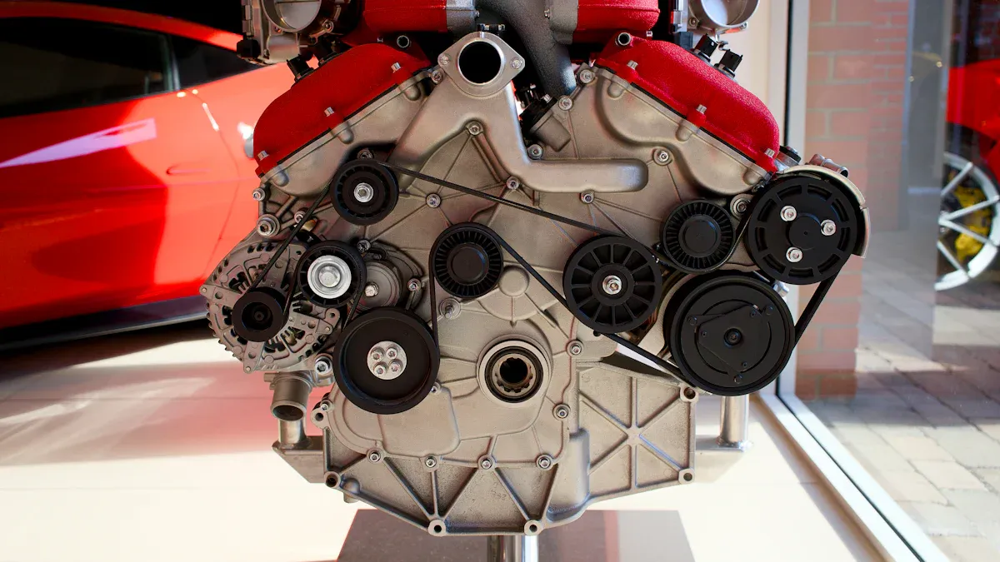
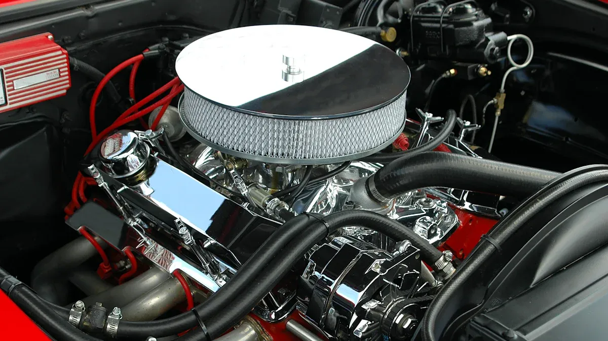

Industrial News

How to Enhance Motor Performance through VFD Matching Techniques
Matching variable frequency drives (VFDs) to specialty variable speed motors can significantly boost performance. In my experience, selecting the right VFD enhances efficiency and cuts operational costs. For instance, in pumping applications, I’ve seen energy costs account for about 40% of total ownership. With a VFD, I’ve achieved at least a 30% reduction in energy consumption, which translates to substantial savings. Understanding motor specifications is crucial for effective matching. By grasping these details, I ensure that both the motor and VFD work in perfect harmony, maximizing their potential.
Key Takeaways
- Matching the right VFD to a motor improves energy efficiency and cuts operational costs significantly.
- Understanding motor torque, speed, and load characteristics helps select a VFD that fits the motor’s needs perfectly.
- VFDs reduce energy use by adjusting motor speed to match load, which also extends equipment life.
- Choosing the correct VFD size and type, while considering environmental factors, ensures reliable and efficient operation.
- Regular monitoring and adjusting VFD settings boost motor performance and prevent costly downtime.
Understanding Motor Specifications
When it comes to enhancing motor performance, understanding motor specifications is crucial. I’ve learned that two key aspects stand out: torque requirements and speed/load characteristics.
Importance of Torque Requirements
Torque is the force that drives the motor's rotation. It’s essential to match the torque requirements of the motor with the capabilities of the variable frequency drive (VFD). If the VFD cannot handle the torque demands, it can lead to inefficiencies or even equipment failure.
I often refer to performance metrics to ensure proper matching. For instance, I look at the following:
| Performance Metric | Description & Impact on VFD Matching |
|---|---|
| Horsepower | The VFD power rating must meet or exceed motor horsepower to handle torque demands. |
| Service Factor | Motors with service factors (e.g., 1.15) require VFDs capable of handling up to 115% of rated horsepower without tripping. |
| Maximum Current | The VFD must supply sufficient current, especially during startup when torque demand peaks. |
| Torque | Torque requirements dictate VFD sizing; specialty motors needing full torque at low speeds require appropriately sized VFDs. |
| Speed | The VFD must manage torque across the motor’s speed range, critical for specialty applications. |
| Current Overload Capability | VFD overload ratings (e.g., 150% for 60s, 200% for 3-10s) ensure it can handle high starting torque demands. |
| Braking Capability | VFD braking power and duty cycle must accommodate energy generated during deceleration to protect the system. |
In my experience, applications requiring constant torque across the speed range, like conveyors, need VFDs capable of delivering full torque at low speeds. This matching ensures efficient operation and extends equipment life.
Analyzing Speed and Load Characteristics
Analyzing speed and load characteristics is another vital step in the VFD matching process. I’ve found that VFDs control motor speed and torque by varying frequency and voltage. This capability allows for precise adjustments to match load requirements.
Here are some key points I consider:
- Matching motor speed to load optimizes energy consumption, reducing unnecessary energy use when full speed isn’t needed.
- VFDs provide soft start and stop functions, which reduce mechanical stress and extend equipment lifespan.
- In commercial laundry applications, I’ve seen VFDs adjust motor speed based on load characteristics, preventing damaging vibrations during spin cycles.
- Load balancing algorithms in VFDs detect and correct load imbalances, demonstrating the importance of analyzing load and speed data for optimal performance.
These factors collectively show that understanding speed and load characteristics is essential for effective VFD matching. It ensures energy efficiency, operational flexibility, and equipment longevity.
By focusing on these specifications, I can confidently select the right VFD for any application, ensuring that both the motor and drive work together seamlessly.
Benefits of VFDs for Variable Speed Motors

Energy Efficiency Gains
I have witnessed firsthand how VFDs can dramatically improve energy efficiency in variable speed motors. By optimizing motor speed and torque to match load requirements, VFDs significantly reduce energy consumption. For example, a study from Sweden found that companies using VFDs achieved energy efficiency gains of up to 30%. This is not just theoretical; I’ve seen similar results in my projects.
In one case, I worked with a facility that retrofitted its motors with VFDs. The energy savings ranged from 1765 to 3605 MWh, depending on the load, translating to cost savings between approximately US$115,936 and US$230,693. The payback period for these larger motors was impressively short, often between 1 to 3 years. This kind of data highlights the tangible benefits of integrating VFDs into motor systems.
Moreover, the U.S. Department of Energy reports that electric motors consume about 68% of the electricity used in industrial manufacturing. This statistic underscores the potential for energy savings through improved motor efficiency. VFDs allow for small speed reductions, which can lead to substantial energy savings. For instance, in fluid systems like pumps and fans, power demand varies with the cube of motor speed. A mere 20% reduction in speed can cut energy consumption by nearly 50%.
Enhanced Control and Flexibility
The control and flexibility offered by VFDs are game-changers for variable speed motors. I’ve experienced how VFDs enable precise speed and torque control, allowing for fine-tuning of motor operations. This capability is crucial in applications where load conditions frequently change.
For instance, in ventilation systems, I’ve seen energy savings of up to 12.1% simply by optimizing fan speed with VFDs. The ability to adjust motor speed dynamically not only enhances energy efficiency but also extends equipment life. When I reduced fan speed by 20%, the mechanical wear rate dropped to just 12.5% of its original value, significantly prolonging the lifespan of the equipment.
VFDs also provide advanced features like dynamic torque control, which helps manage load variations and prevents motor overload. This is particularly important in specialty applications where maintaining consistent performance is critical. The built-in diagnostics and real-time monitoring capabilities of modern VFDs allow for proactive maintenance, further enhancing operational reliability.
Best Practices for VFD Matching

When it comes to matching variable frequency drives (VFDs) to motors, I’ve found that following best practices can make a significant difference in performance and reliability. Here are some key strategies I recommend.
Selecting the Right VFD Type
Selecting the optimal VFD type is crucial for maximizing motor performance. I always start by gathering essential motor specifications, including power rating, full load current, voltage, and frequency. This information establishes the baseline requirements for the VFD. Here’s a checklist I follow:
- Identify the Load Type: Determine if the application requires constant torque or variable torque. This distinction influences the VFD sizing and selection.
- Assess Environmental Conditions: Consider factors like temperature, humidity, and altitude. These elements affect the VFD's current capacity and overall performance.
- Calculate Required VFD Size: Ensure the VFD’s current capacity meets or exceeds the motor's full load current and overload demands.
- Consult Manufacturer Guidelines: Always refer to manufacturer specifications and industry standards for compatibility and best practices.
- Avoid Common Mistakes: Don’t undersize the VFD based solely on horsepower. Instead, focus on the motor's full load amps (FLA) for accurate sizing.
By following these steps, I ensure that the VFD can handle the motor's demands effectively, leading to improved efficiency and reduced operational costs.
Considering Environmental Factors
Environmental factors play a significant role in VFD performance. I’ve learned that conditions such as heat, dust, and vibration can impact the reliability of the drive. Here are some considerations I keep in mind:
- Installation Environment: Ensure the VFD is installed in a clean, ventilated area to prevent overheating and dust accumulation.
- Protective Measures: Use inductive absorbers and grounding rings to mitigate VFD-induced currents that can damage motor bearings.
- Long-Term Performance: Proper installation and configuration are critical. They protect the VFD from external factors, ensuring it operates reliably over time.
By taking these environmental factors into account, I can select VFDs that not only meet performance requirements but also withstand the conditions they will face in operation.
Operational Data Analysis for Specialty Motors
Monitoring performance metrics is essential for optimizing the operation of specialty motors. I’ve found that keeping a close eye on various data points can lead to significant improvements in efficiency and reliability. Here are some key metrics I focus on:
- Energy Consumption: Tracking energy usage helps me identify trends and areas for improvement. I often see that VFDs can reduce power consumption by up to 25% in applications like pumps and fans.
- Motor Speed: Monitoring the motor speed allows me to adjust settings to match load demands. This adjustment can lead to substantial energy savings.
- System Performance: I analyze how well the entire system operates, including the interaction between the motor and the VFD. This holistic view helps me make informed decisions.
Tip: Continuous monitoring and analysis of VFD performance data enable me to make informed adjustments. I recommend regularly checking energy consumption, motor speed, and system performance to ensure optimal operation.
In addition to monitoring, I also focus on adjusting for optimal operation. I’ve learned that making the right adjustments can significantly enhance the performance of variable speed motors. Here are some strategies I employ:
- Assess Load Requirements: Before implementing a VFD, I assess the load requirements and motor type. This step ensures that the VFD is suitable for the application.
- Regular Maintenance: I perform regular maintenance, including checking connections and cooling systems. This practice helps prevent downtime and extends equipment lifespan.
- Training Staff: I train my team on VFD operation and troubleshooting. This training minimizes downtime and empowers them to handle minor issues independently.
- Utilizing Advanced Features: Many modern VFDs come with advanced features like predictive maintenance and data analytics. I leverage these capabilities to optimize motor performance and reduce the need for human intervention.
By integrating Industry 4.0 technologies, I can monitor motor performance in real-time. This connectivity allows for remote adjustments and problem diagnosis, which enhances operational efficiency. For example, AI and machine learning capabilities in VFDs enable automatic adjustments and anomaly detection, further improving performance.
In my experience, these operational data analyses and adjustments lead to significant energy savings and improved reliability. I encourage anyone working with variable speed motors to adopt these practices for optimal performance.
Matching VFDs to specialty variable speed motors is crucial for maximizing performance. I’ve seen how proper selection leads to significant energy savings and improved efficiency. The long-term benefits of this approach are undeniable. Not only do I reduce operational costs, but I also enhance equipment lifespan.
I encourage you to continuously evaluate and adjust your VFD settings. This practice ensures peak performance and keeps your systems running smoothly. Remember, investing time in proper VFD matching pays off in the long run!